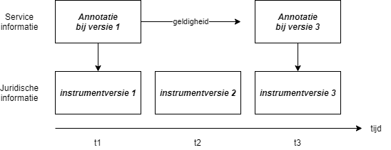
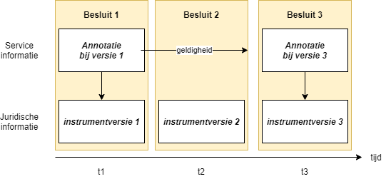
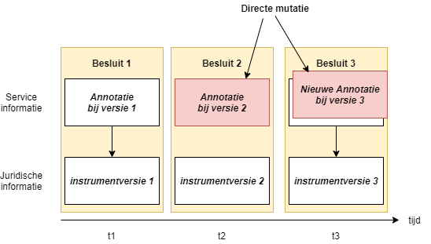

Annotaties
Inleiding
Naast de inhoudelijke modules en de contextinformatie zijn de annotaties de derde soort module die het STOP-informatiemodel kent. Zie ook het informatiemodel Instrument en instumentversies.
Een annotatie bevat een interpretatie of duiding van de (juridische) inhoud van een instrument die voor software te begrijpen is. De annotatie bevat dus geen nieuwe informatie, immers de informatie in een annotatie is af te leiden door de instrument-informatie te bestuderen. De informatie is alleen op een andere manier gemodelleerd, zodat software er mee kan werken.
Een goed voorbeeld is de relatie van een toelichting naar het toegelichte artikel of lid: de Toelichtingsrelatie. Die is af te leiden door de tekst goed te lezen, maar de tekst is te ingewikkeld gestructureerd om dat geautomatiseerd door tekstanalyse te laten doen. Door de relaties voor software expliciet te maken in de vorm van een annotatie kan software deze relaties wel automatisch verwerken.
Met andere woorden: Een annotatie is een interpretatie of duiding van de (juridische) inhoud van een instrument die voor software te begrijpen is. De essentie is dat tekstuele informatie door toevoegingen machineleesbaar wordt.
Relatie met juridische informatie
Een annotatie geeft een nadere duiding van een juridisch Work. Een annotatie is service-informatie, het maakt geen deel uit van de juridische informatie.
Een annotatie heeft geen eigen tijdlijn. Dit wil zeggen dat bij één instrumentversie maximaal één annotatie bestaat. Een tweede annotatie bij dezelfde instrumentversie komt in plaats van de eerste. Een gewijzigde annotatie wordt beschouwd als foutcorrectie en vervangt dus de originele annotatie.
Indien bij een opvolgende instrumentversie geen annotatie wordt meegeleverd, dan blijft de annotatie van de voorgaande instrumentversie van toepassing. Dus alleen als de annotatie zelf wijzigt, moet deze opnieuw aangeleverd worden.

Annotaties aanleveren
Annotaties kunnen zowel tegelijk met het besluit, als later met een directe mutatie aangeleverd worden.
In het volgende diagram wordt het tegelijktijdig meeleveren van een annotatie bij een besluit geschetst:

Het 'na-leveren' van de annotatie met een directe mutatie kan als volgt worden geschetst:

Zie ook de beschrijving van de directe mutatie.
Annotaties identificeren
Annotaties hebben geen eigen identificatie. Annotaties behoren bij het instrument waarover de annotatie informatie bevat. Annotaties worden dan ook direct met een instrument(versie) aangeleverd of, en dat is het bijzondere van een annotatie, via een directe mutatie.
Soorten annotaties
In het informatiemodel van STOP worden de volgende modules als annotatie beschouwd:
LET OP: In tegenstelling tot Procedureverloopmutatie is Procedureverloop zelf geen annotatie maar een contextmodule. Kenmerk van contextmodules is dat deze tijdsafhankelijk zijn, deze modules bevatten informatie die in de loop der tijd wijzigt. Ten behoeve van tijdreizen moet voor het Procedureverloop bijgehouden worden wanneer welke procedure-stap ontvangen is en bekend was. Annotaties kennen geen eigen tijdslijn en eerdere versies van gewijzigde annotatie zijn dus ook niet opvraagbaar. Daardoor kan het Procedureverloop geen annotatie zijn.
Procedureverloopmutaties zijn wel annotaties. Een voorbeeld: Een kennisgeving bevat een procedureverloopmutatie. De kennisgeving geeft aan dat het besluit gepubliceerd is en het feit dat kennisgeving gepubliceerd is moet aan het procedureverloop van het besluit worden toegevoegd. De kennisgeving zelf en daarmee de procedureverloopmutatie wijzigt in principe niet meer. Hooguit kan het voorkomen dat de procedureverloopmutatie een fout bevatte en gecorrigeerd moet worden. Een annotatie zonder eigen tijdslijn volstaat dus voor de Procedureverloopmutatie van de kennisgeving.